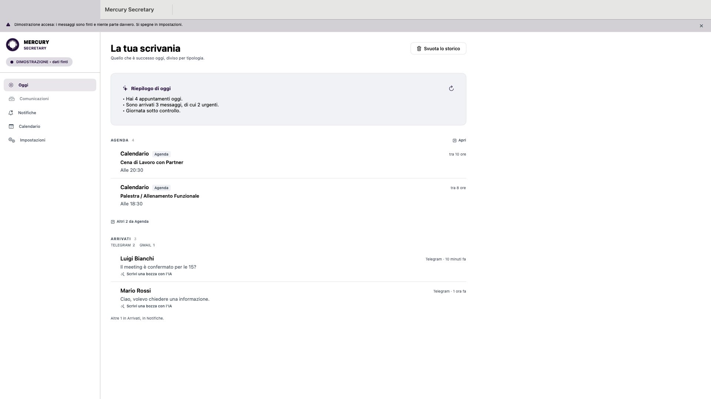
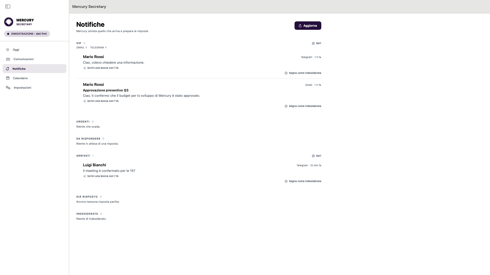
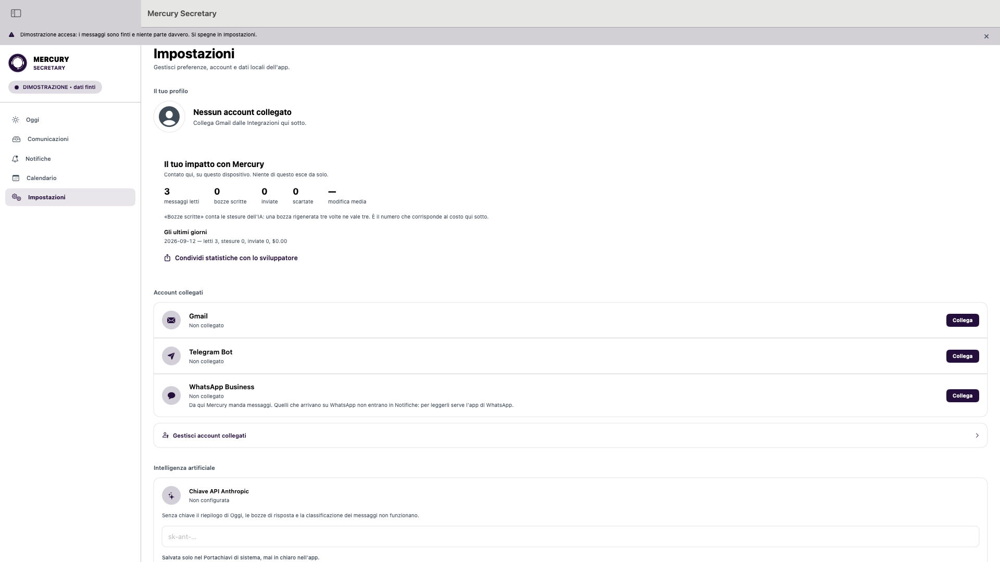

Un'applicazione per Mac, iPhone e iPad che legge quello che arriva, distingue cosa chiede una risposta e prepara le bozze. Non manda niente da sola.
Chi riceve molte email e molti messaggi non perde tempo a rispondere. Lo perde prima: ad aprire tre applicazioni, a scorrere quello che è arrivato, a decidere cosa merita una risposta adesso e cosa può aspettare. È un lavoro che si rifà ogni mattina e che non lascia niente dietro di sé.
Mercury è nato per fare quella prima parte. Guarda gli account che gli colleghi, legge quello che arriva, e lo mette in ordine di giudizio invece che di orario: chi conta, cosa scade, cosa vuole una risposta, cosa è solo arrivato. Dove serve una risposta, la scrive già — e lì si ferma.
La prima schermata non è una casella di posta: è quello che è successo oggi. Gli appuntamenti che hai, i messaggi arrivati, e cosa aspetta una decisione. Da qui non si scorre un elenco infinito: si guarda e si chiude.

Quello che arriva viene diviso in sei sezioni, in quest'ordine: VIP — i contatti che contano, da qualunque canale — poi Urgenti, Da rispondere, Arrivati, Già risposto e Indesiderata.
Un messaggio sta in una sezione sola, altrimenti i conteggi mentono: un messaggio urgente di un contatto VIP sta in VIP, con il contrassegno dell'urgenza. Chi scrive conta più di quanto è urgente. Dentro ogni sezione i messaggi sono contati per provenienza, così si vede da dove arriva la pressione senza mescolare le caselle.

Sotto ogni messaggio che chiede una risposta c'è una bozza già scritta. Si legge, si cambia, si manda — o non si manda. Mercury non spedisce niente da solo, e quando una risposta parte finisce nella stessa conversazione del messaggio a cui risponde, non in un filo nuovo.
Se un invio si interrompe a metà, l'applicazione non riprova da sola: dice che l'esito non si conosce e dove controllare. Un messaggio doppio a chi aspetta una risposta è peggio di uno in ritardo.
Dentro le impostazioni c'è il conto di quello che è successo: messaggi letti, bozze scritte, risposte partite, quanto le bozze vengono cambiate prima di partire, e quanto è costata l'intelligenza artificiale — sui token davvero consumati, non su una stima.
Quello che non c'è, di proposito, sono le «ore risparmiate»: non le misura niente, e un numero gonfiato si riconosce e brucia la fiducia in tutti gli altri.

Dove stanno i tuoi dati. Non esiste un server di Mercury. I messaggi restano sul dispositivo e vanno solo ai servizi che autorizzi tu; le credenziali stanno nel Portachiavi del sistema, mai in chiaro. Il testo dei messaggi in arrivo viene inviato ad Anthropic per essere classificato e per scrivere le bozze. Il dettaglio è nell'informativa sulla privacy.
Mercury Secretary è in sviluppo attivo e in prova sul campo. Non è ancora sull'App Store, e non è in vendita: non c'è niente da comprare su questa pagina.
Se vuoi provarlo quando ci sarà qualcosa da provare, scrivi — l'indirizzo entra in una lista d'attesa e serve a una cosa sola: avvisarti.
Scrivi per entrare nella lista d'attesa
Perché un indirizzo e non un modulo. Un modulo avrebbe bisogno di un servizio esterno che raccoglie gli indirizzi, e questa pagina non ne chiama nessuno: nessuna statistica, nessun tracciamento, nessun carattere caricato da un altro dominio. Il tuo indirizzo resta in una casella di posta, non viene dato a nessuno, e per uscire dalla lista basta rispondere e dirlo. Sta scritto anche nell'informativa sulla privacy.